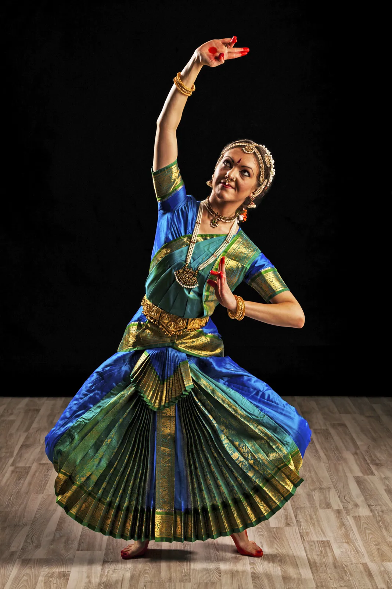

A traditional Indian folk dance that honors, worships, and celebrates the feminine form of divinity.
The dance is traditionally performed during the festival of Navratri.
It is performed majorly in the state of Gujarat.
The dance originated in villages of Gujarat where the entire community participated.Garba dances celebrate fertility,
honour womanhood, and pay respect to any of an array of mother goddesses. In Gujarat the dances customarily mark
a girl’s first menstrual cycle and, later, her imminent marriage. Garba dancing also takes place during the nine-day Navratri festival,
held annually during the Hindu month of Ashvina (September–October). Although men may participate on some occasions, women are the typical performers of garba.
Type 2: Kathak
Kathak is a prominent ancient Indian classical dance and is thought to have started from the wandering bards of North India known as Kathakars, meaning storytellers.
These Kathakars travelled and conveyed stories by means of music, dance and songs akin to the early Greek theatre.
Kathak is indigenous to northern India and developed under the influence of both Hindu and Muslim cultures.
Kathak is characterized by intricate footwork and precise rhythmic patterns that the dancer articulates by controlling
about 100 ankle bells. It takes its movements from life, stylizes them, and adds the complex rhythmic patterns.
Kathak is danced by both males and females; many of the dances convey moods of love.

Type 3: Bharatnatyam
Bharatanatyam, a pre-eminent Indian classical dance form presumably the oldest classical dance heritage of India is regarded as mother of many other Indian classical dance forms.
Conventionally a solo dance performed only by women, it initiated in the Hindu temples of Tamil Nadu and eventually flourished in South India.
Theoretical base of this form traces back to ‘Natya Shastra’, the ancient Sanskrit Hindu text on the performing arts.
A form of illustrative anecdote of Hindu religious themes and spiritual ideas emoted by dancer with excellent footwork and impressive gestures its performance repertoire includes nrita, nritya and natya.
Accompanists include a singer, music and particularly the guru who directs and conducts
the performance. It also continues to inspire several art forms including paintings and sculptures starting from the spectacular 6th to 9th century CE temple sculptures.
Type 4: Bhangra
Bhangra is the traditional dance of Punjab. It is native to the Punjabi nation. A long ago, Punjabi-Sikh farmers started to use different farming activities
to create a dance form to celebrate food-growing, harvesting and relationship to the land, which later they starting calling Bhangra.
The term bhangra originally designated a particular dance performed by Sikh and Muslim men in the farming districts of the Punjab region of South Asia.
The dance was associated primarily with the spring harvest festival Baisakhi, and it is from one of the major products of the harvest—bhang
(hemp)—that bhangra drew its name. In a typical performance, several dancers executed vigorous kicks,
leaps, and bends of the body to the accompaniment of short songs called boliyan and, most significantly, to the beat of a dhol (double-headed drum).